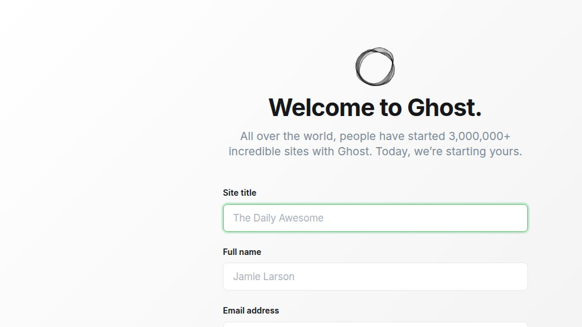

Ghost 5 on Docker SQLite: the two env vars the README forgets
The Ghost docker README's example uses MySQL. The image, however, supports SQLite for hobby and dev installs — but the moment you set database__client=sqlite3 and nothing else, the container starts, prints "Your site is now available", then crashes within four seconds with TypeError: String expected. Two more env vars (one of them undocumented in the README) make it boot cleanly. Here's the exact log, the fix, and the real numbers.
We're the team behind SimpleReview, a Chrome extension that drafts code-fix PRs on whatever site you click. Not affiliated with Ghost Foundation. This page is a deployment note from one real install on one Linux box, dated above. If we got something wrong, open a GitHub issue and we'll fix it.
The docker run that crashes
docker run -d --name ghost-test -p 18082:2368 \
-e url=http://localhost:18082 \
-e database__client=sqlite3 \
ghost:5-alpineThis is the natural extrapolation from the official README's MySQL example. database__client=sqlite3 is a valid Knex client. So we'd expect Ghost to pick a default file path and run. It does not.
$ docker logs ghost-test
[INFO] Ghost is running in production...
[INFO] Your site is now available on http://localhost:18082/
[INFO] Ctrl+C to shut down
[INFO] Ghost server started in 0.308s
Could not find `connection.filename` in config.
Please specify the database path and name to avoid errors.
(see docs https://knexjs.org/guide/#configuration-options)
[ERROR] String expected
"Unknown database error"
Error ID: 500
TypeError: String expected
at /var/lib/ghost/versions/5.130.6/node_modules/knex-migrator/lib/database.js:57:19
at /var/lib/ghost/versions/5.130.6/node_modules/knex/lib/dialects/sqlite3/index.js:99:18
[WARN] Ghost is shutting down
[WARN] Ghost has shut down
[WARN] Your site is now offline
[WARN] Ghost was running for a few secondsGhost 5.130.6 prints Your site is now available at 0.3 s — that line is misleading. The actual database client doesn't acquire a connection until the first request, and at that point Knex tries to read connection.filename from config. It's undefined, the SQLite driver throws TypeError: String expected, the error handler catches it as "Unknown database error", and the container exits within four seconds.
The advisory line above the crash — "Could not find connection.filename in config" — is the right diagnostic, but it scrolls past the green INFO logs and most users miss it.
The two env vars that make it work
Knex needs a real path. Ghost also wants a SQLite-friendly default behaviour flag. Set both:
docker run -d --name ghost-test -p 18082:2368 \
-e url=http://localhost:18082 \
-e database__client=sqlite3 \
-e database__connection__filename=/var/lib/ghost/content/data/ghost.db \
-e database__useNullAsDefault=true \
-v ghost-data:/var/lib/ghost/content \
ghost:5-alpine1. database__connection__filename — absolute path to the SQLite file inside the container. Ghost expects it under /var/lib/ghost/content/data/ (anywhere else and the image's volume layout doesn't help you).
2. database__useNullAsDefault=true — the Knex flag that turns off undefined-becomes-NULL warnings. Ghost's migrations run cleaner with it on. Without it, you get a console warning per insert and slower migration boots.
3. A volume mount on /var/lib/ghost/content — otherwise the SQLite file vanishes on container restart. Strictly speaking optional, but you almost certainly want it.
What boot looks like once env is right
Same image, same docker run, just with the two extra env vars. Logs (trimmed):
[INFO] Ghost server started in 0.32s
[WARN] Missing mail.from config, falling back to a generated email address.
Please update your config file and set a valid from address
[INFO] Invalidating assets for regeneration
[INFO] Adding offloaded job to the inline job queue
[INFO] Stripe not configured - skipping migrations
[INFO] URL Service ready in 1142ms
[INFO] Scheduling job clean-expired-comped at 19 5 1 * * *
[INFO] Scheduling job clean-tokens at 25 42 6 * * *
[INFO] Scheduling job update-check at 57 5 4 * * *
[INFO] Ghost booted in 4.909sGhost reports two start times in different log lines: "server started in 0.32s" (the Express server is listening) and "booted in 4.9s" (URL service, schedulers, and migrations are done). Treat the second number as your real cold start.
| Phase | Wall clock / RAM | Notes |
|---|---|---|
| Express listens | 0.32 s | Misleading — DB not yet acquired |
| Full boot | 4.91 s | URL service, cron schedulers, migrations |
| Idle RAM | 154 MiB | Lightest of the LLM/CMS tools we tested today |
| Content volume | 1.2 MB | Empty SQLite + default theme. Lean by any standard. |
| HTTP / | 200 | Front-of-house default theme renders |
| HTTP /ghost/ | 200 | Admin setup wizard renders |
For comparison, the four other tools we tested today on the same VM:
| Tool | Cold start | Idle RAM | Disk after first boot |
|---|---|---|---|
| Ghost 5.130.6 | 4.9 s | 154 MiB | 1.2 MB |
| Open WebUI 0.9.2 | 36 s | 1015 MiB | 1.1 GB |
| Cal.com 6.16.1 | ~30 s + migrate | 1126 MiB | 350 MB |
| Dify 1.14.0 (11 containers) | 58 s | 1326 MiB total | ~1 GB |
Ghost's resource profile is what you'd want from a blogging tool: small, fast, predictable. The friction is in the env layout, not the runtime.
The setup wizard
Once boot finishes, /ghost/ serves a three-step wizard:

http://<host>/ghost/ after first boot. The first user becomes admin (same convention as Open WebUI). No email confirmation required for SQLite installs without SMTP configured.Quiet warnings worth knowing about
Missing mail.from config: Ghost falls back to a generatednoreply@<your-host>address and sends through… no provider, because no SMTP env is set. Effect: invitations, password resets, member sign-ups all silently no-op. Fix: setmail__transport=SMTP+mail__options__service+ credentials. The README's MySQL example doesn't include the mail block; add it before going public.Stripe not configured - skipping migrations: fine for a hobby/blog install, but if you later wire Stripe you'll see a backlog of "skipped" migrations replay on the boot when keys are added. Plan a maintenance window.- SQLite is not officially recommended for production. Ghost's own docs say "for development and small sites only". Reasonable rule of thumb: SQLite is fine until your traffic hits a few thousand uniques/day or you want background workers; switch to MySQL 8 above that. Don't migrate later by hand — Ghost's
ghost migratecommand exists for a reason. - The
urlenv is permanent in the database. Change it after first boot and you'll have to rewrite stored references. Pick the production URL on day one.
Things we'd change in the docker README
- Add a SQLite "hobby" example next to the MySQL one. The image supports it; the example just isn't there. The two env vars (
filename+useNullAsDefault) need to be in the example, not buried in ghost.org/docs/config. - Move the "Your site is now available" log behind the DB acquisition. Right now it prints before the database connects, which is misleading when the DB then crashes the process. Print it after the first successful query.
- Surface the warning earlier. The "Could not find connection.filename" diagnostic is correct; the surrounding INFO logs bury it.
Where this fits
One short, honest write-up per self-hostable CMS/LLM/booking tool we run on a real Linux box. Adjacent: Open WebUI on Linux Docker, Dify 1.14.0 docker-compose, Cal.com 6.16.1 self-host, PostHog hobby self-host. SimpleReview is the Chrome extension that turns whatever element you click on a broken admin into a draft code-fix PR — Ghost setup wizards included.
Demo: SimpleReview on the Ghost SQLite crash

at Client_SQLite3.acquireRawConnection
code: P500 · clientVersion: 5.130.6
Ghost was running for a few seconds
database__connection__filename + useNullAsDefault=true